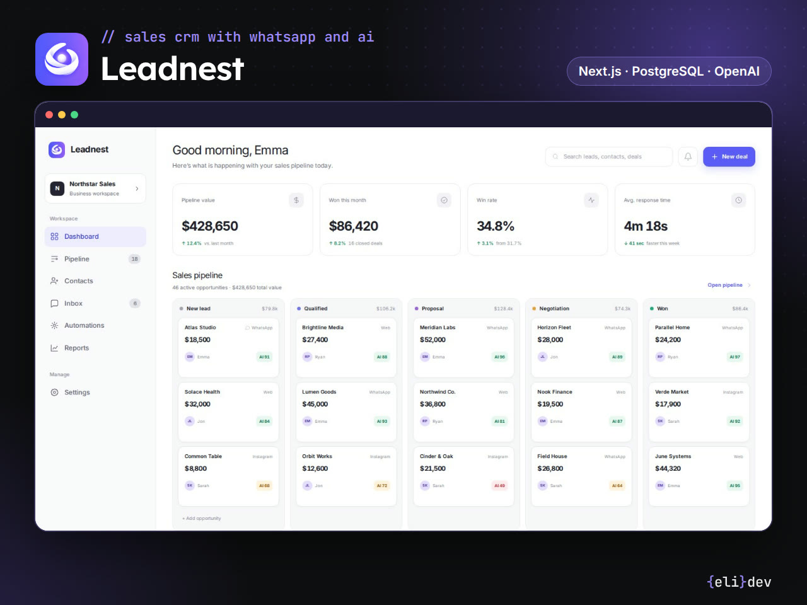
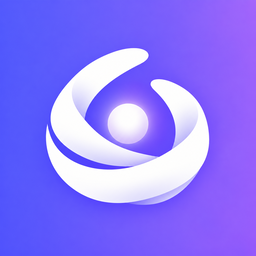
Leadnest
CRM de ventas con WhatsApp e IA
Pipeline kanban con canal y puntaje de IA en cada oportunidad, gráficos de ingresos y conversión, y un resumen de cada conversación con la intención, el presupuesto y el próximo paso.
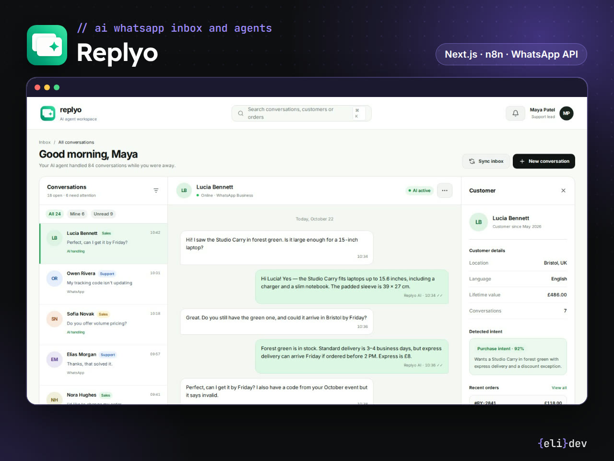
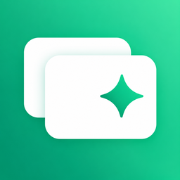
Replyo
Inbox de WhatsApp con agentes de IA
El agente responde desde una base de conocimiento, agenda turnos y pasa la consulta a una persona con todo el contexto. Bandeja compartida, panel del cliente, constructor visual de agentes al estilo n8n y métricas de respuestas IA vs. humanas.
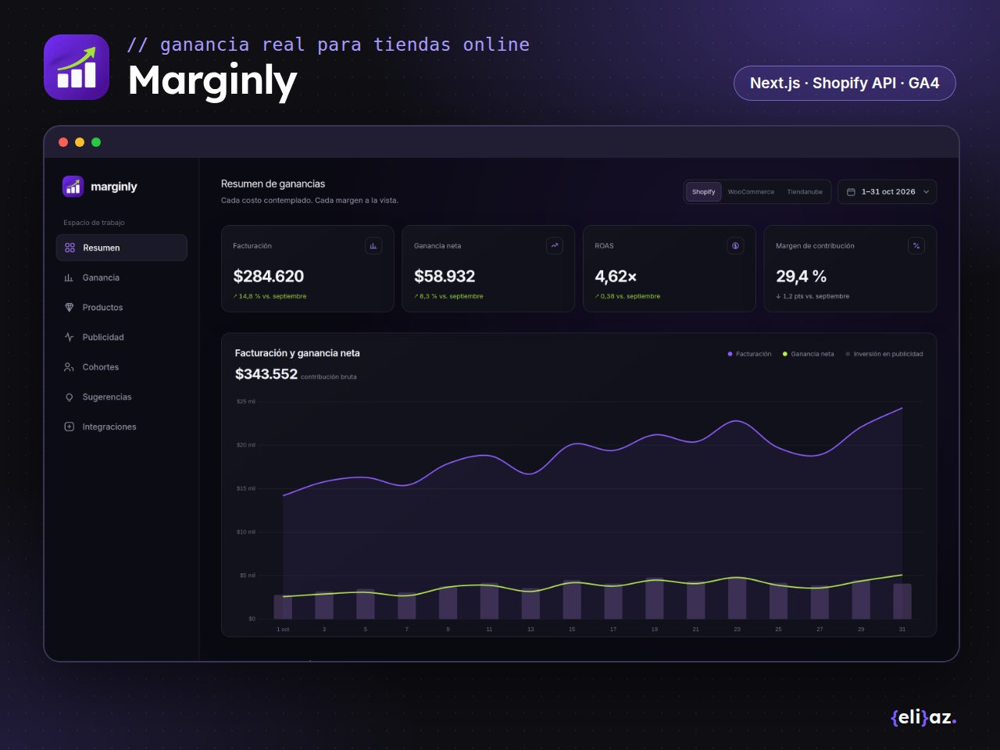
Marginly
Analítica de ganancia para tiendas online
Ganancia neta real después de costo, envío, comisiones y publicidad para Shopify, WooCommerce y Tiendanube: ROAS por día, cascada de ganancia, productos que pierden plata e ideas de la IA con su impacto estimado.
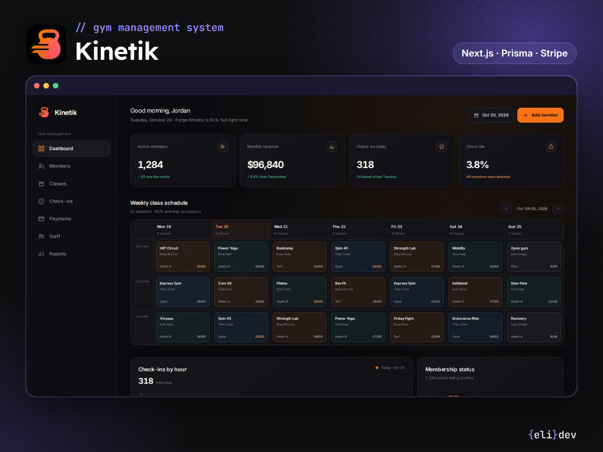
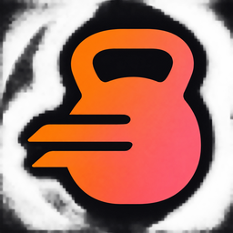
Kinetik
Sistema de gestión para gimnasios
Socios y membresías, grilla semanal de clases con cupos, ingresos por hora, pagos y una lista de socios en riesgo que dejaron de ir, con recordatorio por WhatsApp en un clic.
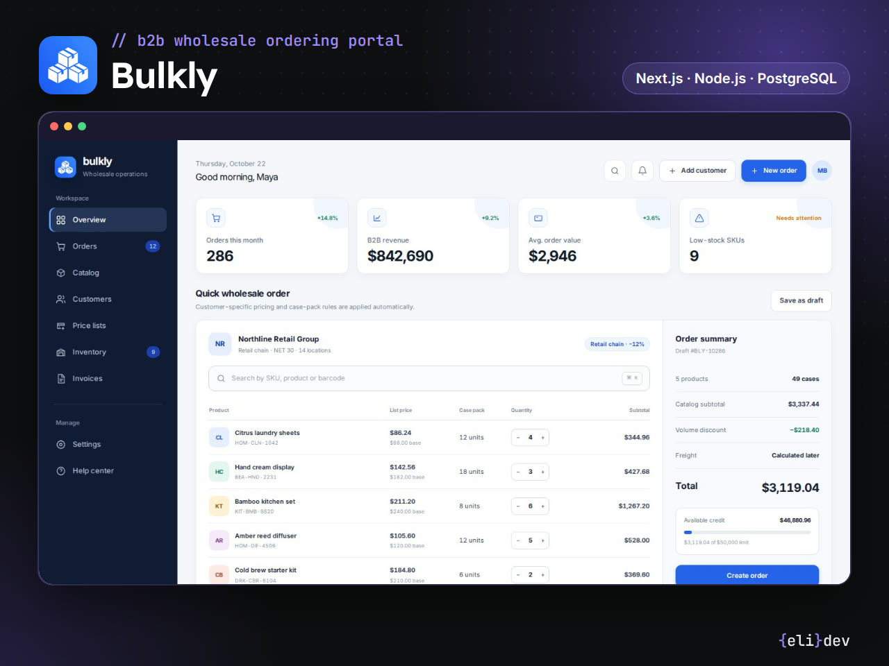
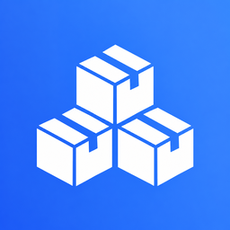
Bulkly
Portal de pedidos mayoristas (B2B)
El cliente hace pedidos rápidos por SKU con su lista de precios, mínimos por bulto y crédito disponible; el equipo maneja listas por segmento, stock por depósito y cada pedido desde la preparación hasta la factura.
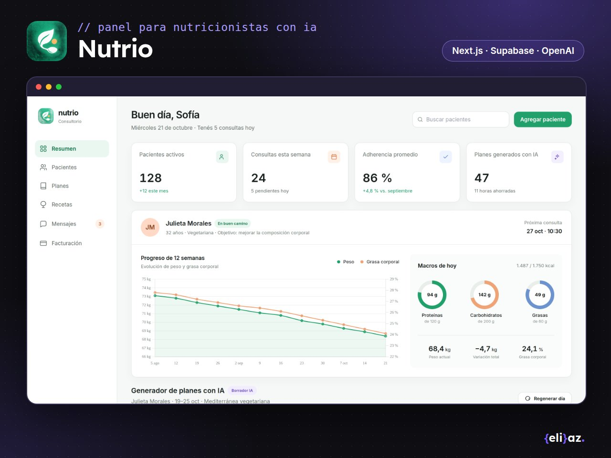
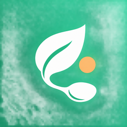
Nutrio
Panel para nutricionistas con planes de IA
Fichas de pacientes con evolución de peso y grasa corporal, macros del día, armado del plan semanal con IA y registro de comidas por foto analizado por IA.
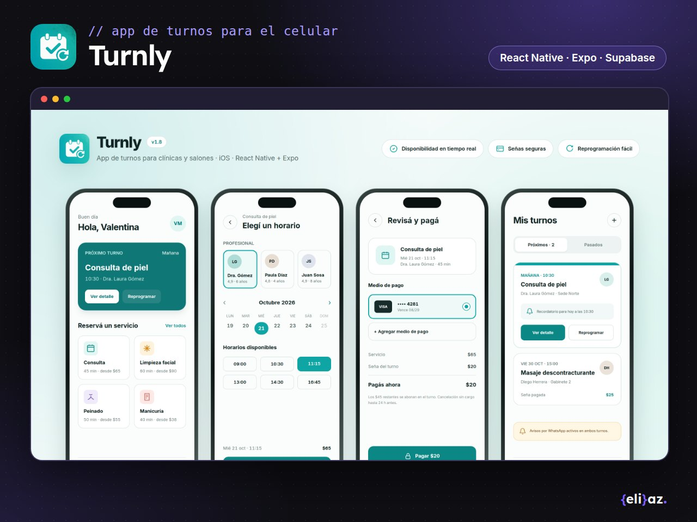
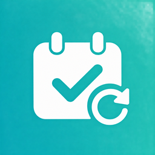
Turnly
App de turnos para iOS
Para clínicas y salones: el cliente elige servicio, profesional y horario, paga una seña y recibe recordatorios; el negocio tiene un back office web con la agenda del día, la ocupación y los ingresos.